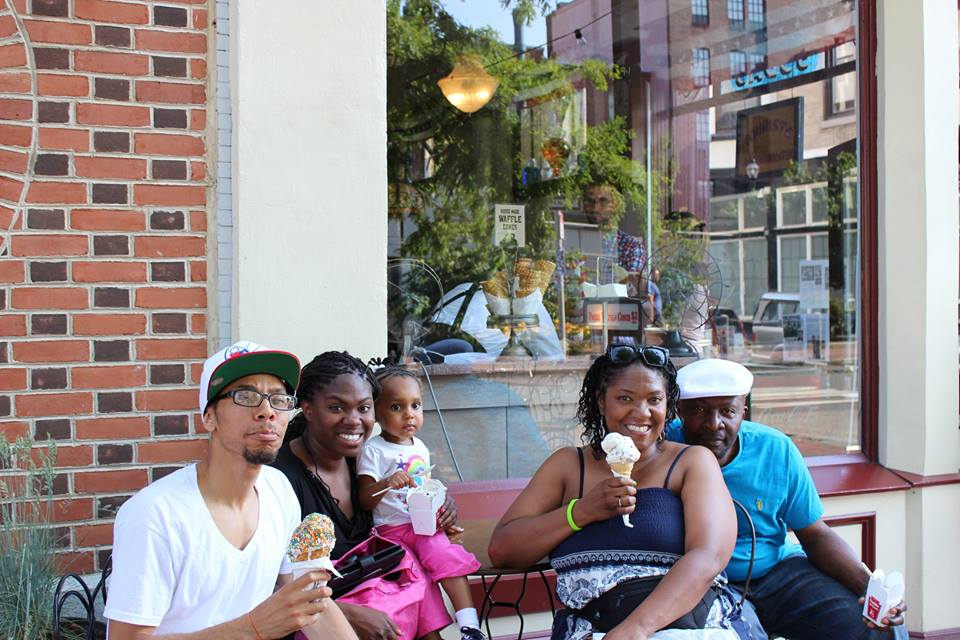
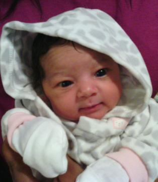
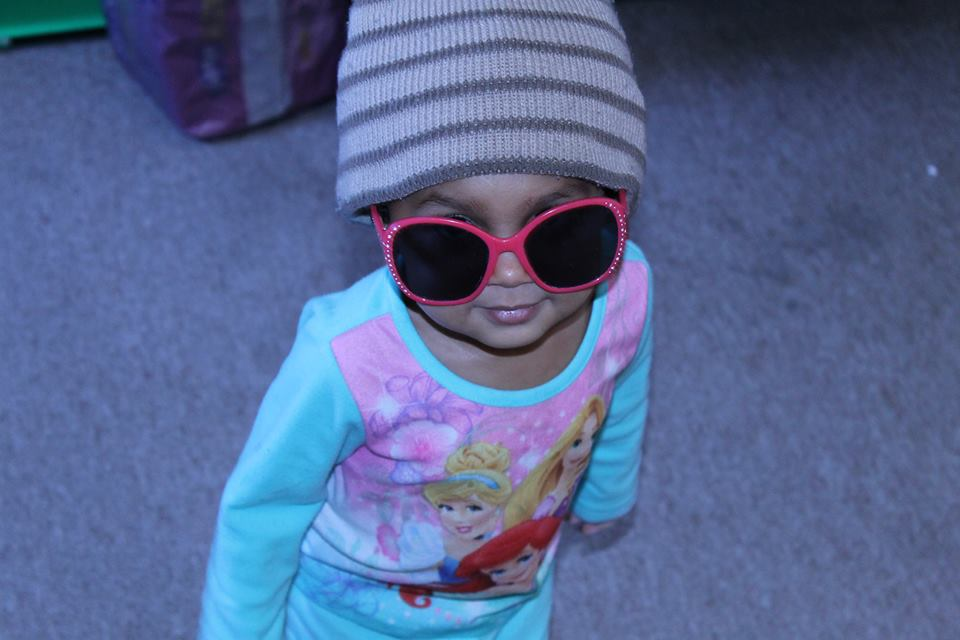

I was born in South Caroline but raised in Georgia. I love people, food, and coding. I am huge on tradition, religion, and family! I have a loving husband and a wonderful little girl. These twho are the reason I do it all. I have a wonderful twin sister who is absolutely awesome and everyway! She and I are closer than words can express!

I have a lovely family. I have a wonderful husband, Brandon whom i have been married to for 3 years. We started dating when i was 19 and have been together every since. We have an awesome princess named denise. She will be 4 in March. We are a pretty traditional family who loves cooking, photography, and movies. We also love to travel!
 This is my baby girl when she was born LOL!  Denise can be pretty funny.